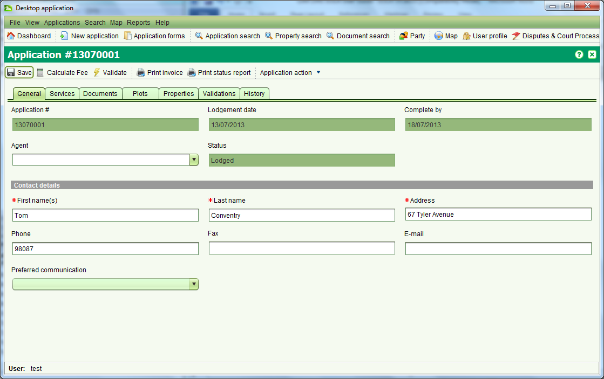

Application Details
The Application Details screen allows you to enter the details for a new
application and/or edit the details of an existing application. To create a
new application, click the Applications > New Applications menu or select

To edit an application, select the application in the assigned or
unassigned application lists on the Dashboard and choose Edit.

An application represents a bundle of services that will be undertaken
by the land administration agency, typically in response to a client
request. Each service may result in changes to property information
and/or associated rights. Details that can be captured for an
application are:
- Agent – An individual or organization that is requesting
information or changes to the land registry and/or cadastre information
recorded in SOLA. This could be a lawyer or surveyor under instruction
from the property owner, the property owner themselves or a third
party with a vested interest in a particular property. Agent details
are optional.
- Contact Details – The individual that can be contacted should
the details of the application require further elaboration or
clarification. A contact person must be identified with every
application and will usually be the applicant.
- Services – Used to control the type of change an application
can make to the land registry and/or cadastre information recorded
in SOLA. These broadly identify the actions the land administration
agency will undertake for the application. Refer to the Services
section of information on the services available for SOLA Lesotho.
At least one service must be added to each application.
- Documents – The legal or other documents that explain and/or
justify the reasons for changing land registry and/or cadastre information. Scanned images of documents should be attached to the application for easy reference. Document details are optional; however there are certain document types that are expected to accompany various services. The Required Document Types list on the Documents tab identifies the types of documents that should be included with the application given the services that have been selected.
- Plots – The plots or plots affected by the application. Plot
details are optional for new applications, but may be required prior
to starting services depending in the services selected for the application.
- Properties – The property or properties affected by the application.
Property details are optional for new applications, but may be
required prior to starting services depending on the services selected
for the application.
- Fees – TO BE DOCUMENTED
- Validations – Displays the results of the automated business rules executed
when you choose to manually validate the application using the Validate action.
Validation is only available after the application has been lodged.
- History – Displays the history of actions applied to the application
and its services. The actions that can be applied to applications
and services are in the Application Lifecycle and Service Lifecycle
sections. History details are only available after the application
has been lodged.
Also See